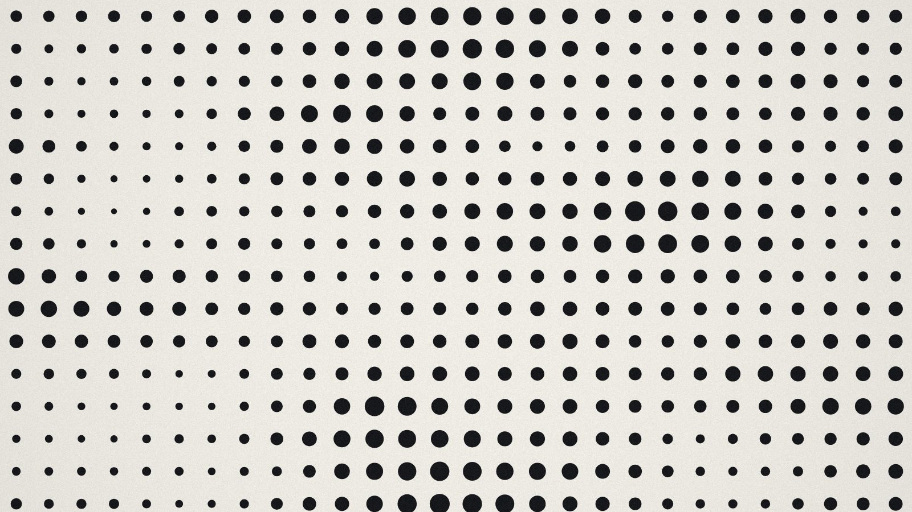
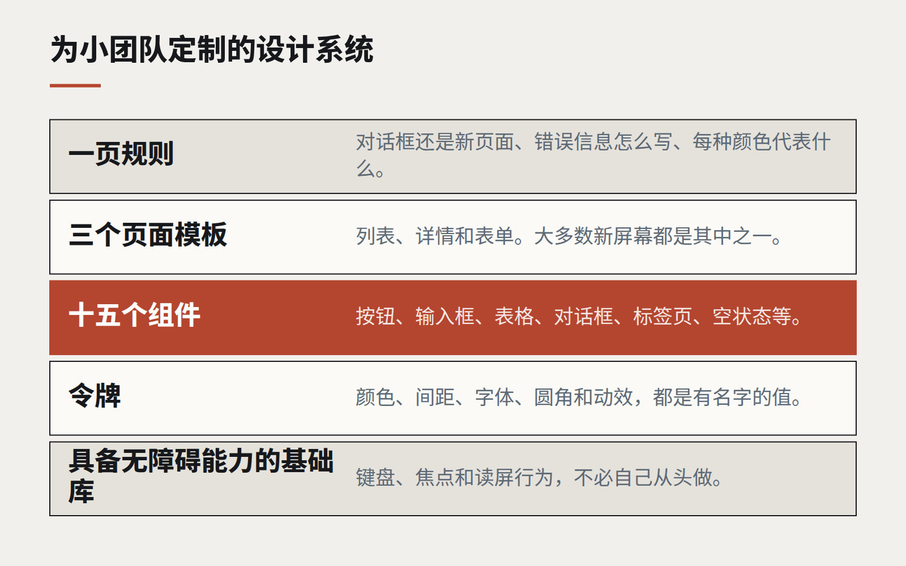

洞察
设计语言
没有设计团队的团队，也能有设计系统
大多数需要一致性的组织，都负担不起一个专职的设计系统小组。一套小而有主见的组件包——以及让它保持小的纪律——就能走完大部分路。

人们谈起设计系统，通常举的是大公司的例子：几十个组件、一个文档站、一支全职维护它的设计师和工程师团队。对于一家只有三个开发者和一个兼职设计师的企业来说，这幅图景令人气馁，常见的反应是干脆不要系统。每个屏幕各自设计，每个开发者自己挑间距，两年后，产品看起来像几个产品缝在了一起。
有一种设计系统适合小团队。它更小、更有主见、离代码更近。而且它每小时带来的价值往往比大型系统更高，因为它瞄准的正是小团队真正面对的问题。
放进去什么
- 令牌优先。 颜色、间距、字号、圆角和动效，都作为有名字的值写进代码。仅此一项就能消除大部分不一致，而且只需几天，不需要几个月。
- 十五个组件，而不是一百个。 按钮、输入框、下拉选择、复选框、表格、卡片、对话框、轻提示、标签页、导航、页面标题、空状态、表单布局、徽标，以及一个加载状态。这张清单覆盖了大多数企业软件中的绝大部分屏幕。
- 三个页面模板。 列表页、详情页和表单页。大多数新屏幕都是其中之一的变体。
- 一页规则。 什么时候用对话框、什么时候开新页面；错误信息怎么写；哪个颜色代表什么。短到大家真的会去读。

什么不放进去
其他一切，直到它被需要第二次。最重要的一个习惯是：只有当第二个屏幕需要某个新组件时，它才进入系统。在那之前，它只是一个一次性的东西，尽可能用现有部件拼出来。这让系统小到无需任何人全职负责也能维护。
站在某样东西上面
小团队不应该从零开始构建基础组件。一个维护良好、具备无障碍能力的组件库——用你的令牌而不是它的默认样式来装扮——能给你键盘支持、焦点管理和屏幕阅读器行为，这些东西自己做要好几个月才能做对。你的系统则是其上薄薄一层、有主见的封装：你的令牌、按你的方式配置的十五个组件，以及你的规则。
让它活着
- 一位兼职负责人。 不是一个团队，而是一个有名有姓的人，负责评审新增内容，并且经常说“不”。
- 一个活的参考页面，放在应用内部，用真实数据展示每一个组件。它同时也是一项视觉测试。
- 自动检查最重要的规则：颜色对比度、令牌文件之外不出现原始颜色值、间距不偏离刻度。
它能换来什么
回报不是为了精致而精致，而是速度和信任。新屏幕是拼装出来的，而不是从头设计。开发者不再争论边距。修好一个基础组件，无障碍体验就在所有地方同时提升。产品开始感觉像一个整体——而对客户来说，这正是“质量”这个词很大一部分的含义。
继续阅读
全部洞察